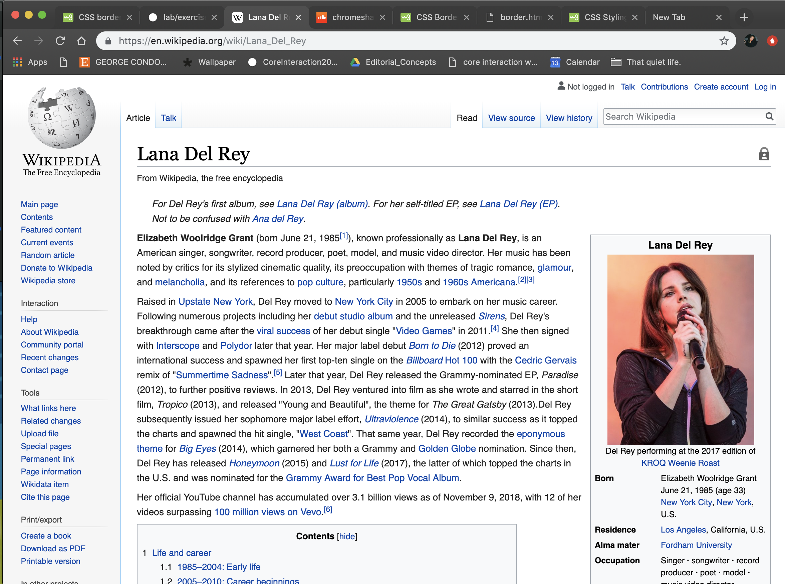
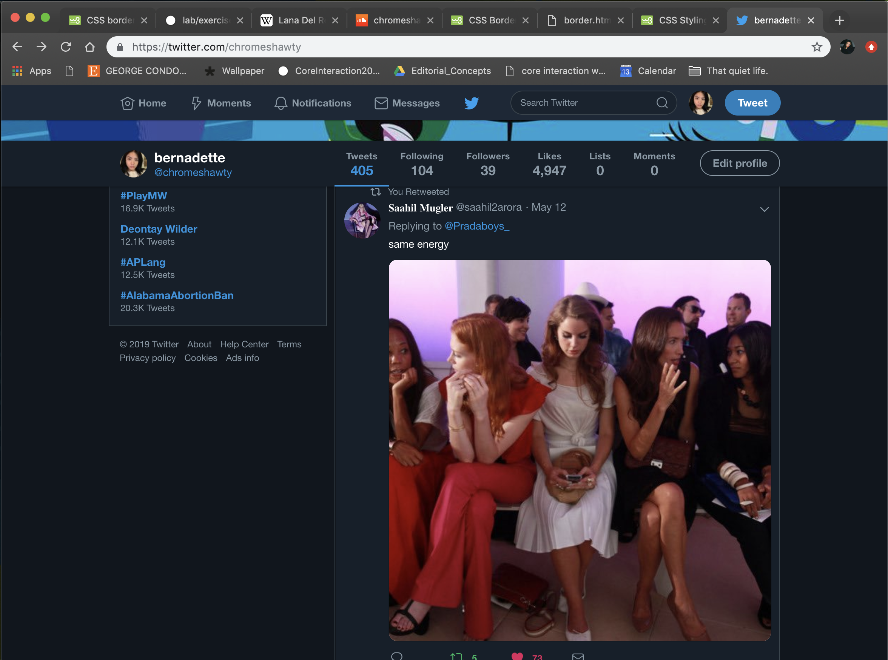

CSS Border Property
The css border properties allow you to specify the style, width, & color of an element's border.
Border Style
The border-style property specifies what kind of border to display.
- dotted: defines a dotted border
- dashed: defines a dashed border
- solid: defines a solid border
- double: defines a double border
- groove: defines a 3D grooved border. the effect depends on the border-color value
- ridge: defines a 3D ridged border. the effect depends on the border-color value
- inset: define a 3D inset border. the effect depends on the border-color value
- outset: defines a 3D outset border. the effect depends on the border-color value
- none: defines no border
- hidden: defines a hidden border
A dotted border.
A dashed border.
A solid border.
A double border.
A groove border.
A ridge border.
An inset border.
An outset border.
No border.
A hidden border.
A mixed border.
Border Width
The border-width property specifices the width of the four border. The width can be set as a specific size (in px, pt, cm, em, etc) or by using on of the pre-defined values: thin, medium, or thick. The border-width property can have one to four values (for the top border, right border, bottom border, & the left border).
Hello World!
Border Color
The border-color property is used to set the color of the four borders.
The color can be set by:
- name - specify a color name, like "red"
- hex - specify a hex value, like "#ff0000"
- rgb - specify a rgb value. like "rgb(255, 0, 0)"
- transparent
A solid multicolor border
Border: Individual Sides
In CSS, there are properties for specifying each of the borders (top, right, bottom, & left).
2 different border styles.
If the border-style property has four values:
border-style: dotted solid double dashed;
top border is dotted
right border is solid
bottom border is double
left border is dashed
If the border-style property has three values:
border-style: dotted solid double;
top border is dotted
right and left borders are solid
bottom border is double
If the border-style property has two values:
border-style: dotted solid;
top and bottom borders are dotted
right and left borders are solid
If the border-style property has one value:
border-style: dotted;
all four borders are dotted
The border-style property is used in the example above. However, it also works with border-width and border-color.
Border: Shorthand Property
To shorten the code, it's possible to specify all the individual border properties in one property.
The border property is a shorthand property for the following individual border properties: - border-width
- border-style (required)
- border-color
Hello world!
Rounded Borders
Normal border
Round border
Rounder border
Roundest border
Examples of Border in the Wild

